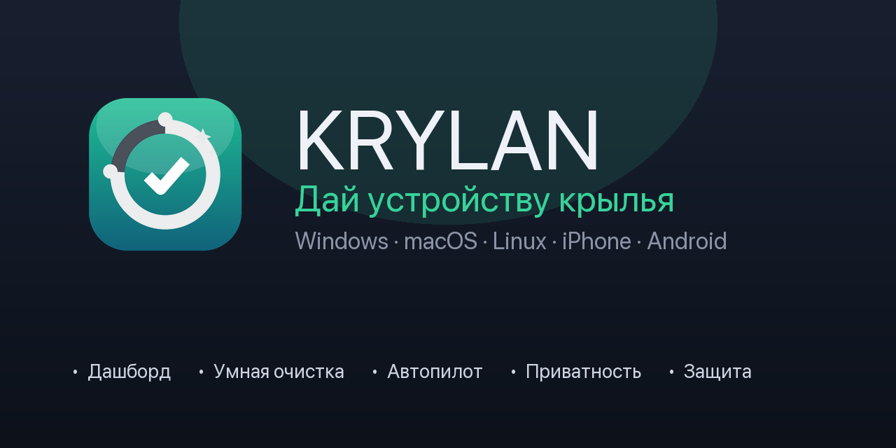
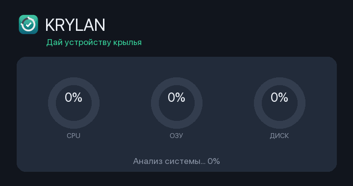

Красивый оптимизатор со «стеклянным» интерфейсом. 🚀 Ускорить одной кнопкой, апдейтер приложений, поиск остатков, Space Lens, живой график интернета. Мощнее CleanMyMac и BoostSpeed — но бесплатно, с открытым кодом и без вредных «бустеров» (никакого дефрага SSD и чистки реестра).
brew install --cask Alex1986-rgb/tap/cleanmac

Ускорить — как новый
Одна кнопка делает всё безопасное: кэши и логи → Корзина, освобождение места (снимки APFS), сброс Quick Look, разгрузка памяти. Без дефрага SSD и реестра.
Дашборд
Кольца Health/CPU/ОЗУ/SWAP/Диск, пончики памяти и диска, тренды (4 линии), живой график интернета ↓/↑, батарея, процессы — в реальном времени.
Апдейтер приложений
Находит устаревшие приложения и пакеты Homebrew и обновляет одной кнопкой — официальными источниками.
Остатки программ
Находит осиротевшие данные удалённых приложений в ~/Library. Системное и Apple не трогает.
Space Lens
Визуальная treemap-карта диска: площадь блока = размер папки. Мгновенно видно, что съело место.
Шредер
Безвозвратное удаление файлов с перезаписью — то, что не должно попасть в чужие руки.
Глубокая Корзина
Видит не только обычную Корзину, но и скрытую системную корзину тома, где незаметно копятся десятки гигабайт. В реальном кейсе освободила ~95 ГБ.
Умная очистка
Один проход по всем безопасным категориям и очистка в один клик. Всё уходит в Корзину — обратимо.
Автопилот
Фоновый страж следит за памятью и при пике сам чистит кэши и разгружает систему.
Приватность
Очистка истории и cookies браузеров, недавних файлов и сохранённых состояний окон.
Защита
Эвристический поиск известного рекламного и нежелательного ПО в точках автозапуска.
Карта диска
Визуальная разбивка крупнейших папок — мгновенно видно, что съело место.
Обслуживание
Освободить память, сбросить DNS, переиндексировать Spotlight, очистить кэш шрифтов и Quick Look.
Деинсталлятор
Полное удаление приложений вместе с их кэшами и настройками.
Яркость и быстрые действия
Кнопка «100%» и слайдер яркости прямо на дашборде. Работает на Apple Silicon.
Экосистема KRYLAN
macOS — доступно
CleanMac, universal (Intel + Apple Silicon). Полный набор инструментов оптимизации.
Windows / Linux — доступно
KRYLAN Desktop (Python): мониторинг и очистка кэшей. Один код для всех ПК.
iPhone — beta (.ipa)
KRYLAN для iOS: дубликаты фото, скриншоты, видео, контакты, виджет диска. TestFlight — после Apple Developer Program.
Android — скоро
KRYLAN для Android: кэши приложений, крупные файлы, дубликаты.
Скачать
iPhone (beta)
Файл .ipa — установка через бесплатный Sideloadly или AltStore с вашим Apple ID:
2. Подключите iPhone кабелем
3. Sideloadly → перетащите .ipa → Start
Подпись бесплатного Apple ID живёт 7 дней, потом переустановить. App Store / TestFlight — скоро.
Android
Скоро в Google Play. Сборка APK — из исходников (krylan-android, Android Studio).